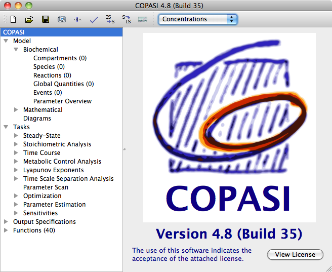

|  |
| Elements of the COPASI User Interface. |
The COPASI graphical user interface essentially consists of four elements.
On the top of the main window, you have the menu bar (on the Mac, the menu bar is on the top of the screen). Below that, you have a tool bar with some common tasks like opening a file or saving a file. The rest of the window is vertically divided into two parts by a slider. The size of the two elements can be adjusted by moving the bar that separates them. The left element is called the object tree and it shows your current model and the tasks that you can perform on this model. Depending on the element that is selected in the object tree, the view on the right will change in order to enable you to edit the model or run and modify the task you selected in the object tree.
If you start COPASI without any command line argument, COPASI will start with a new model. The root of the object tree will be selected and on the right side of the main window, you will see the COPASI logo.
The object tree has five branches below the root element. The first one contains all objects that belong to the current model. The second and third ones contain all tasks that COPASI can execute, the fourth one contains the different output objects COPASI can handle and the last branch contains all the (kinetic) functions that are defined. These include the build in functions as well as functions defined by the user.
If you now click on the Model branch, the view to the right of the object tree will change and you will see a screen that allows you to make
model settings. In the following sections, we will describe the individual dialogs that you can open by selecting different branches in the object tree. During this explanation, you will learn how to create a model in COPASI and run different tasks on this model like calculating a trajectory.